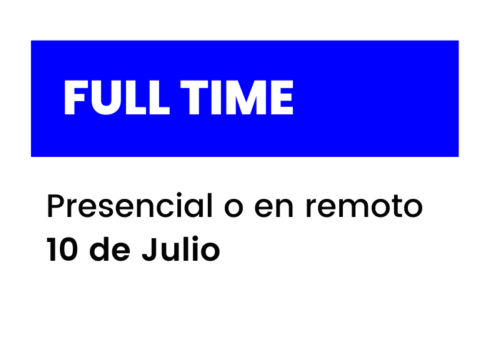
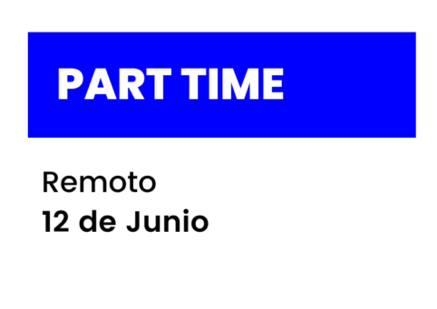

NUESTROS CURSOS


WEB DEVELOPER
El bootcamp de web developer
te comvertirá en un desarrollador web Full-Stack. Aprenderñas a crear páginas web y aplicaciones moviles haciendo uso de las tecnologías más demandadas en la industria.
Sin necesidad de conocimientos previos, nuestro Bootcamp de convierte en un profesional de la programación totalmente preparado para añadir valor en el mercado laboral desde el primer día
¿uieres convertirte en un
web full stack developer?
¿Estás preparado para ser un maestro de data sience?
este es tu sitio perfecto. no dudes en pedir informacion para saber el precio y las plazas disponibles
¿no tienes tiempo para
hacer el curso intensivo full time?
no te preocupes, con la modalidad part time podras congeniar el trabajo con aprender. no pierdas esta oportunidad, pide informacion sobre los cursos part time
DATA SIENCE
El Bootcamp de Data Analistics te convertirá en un profesional de la ciencia de datos.
Aprenderás a programar en Pyton, a almacenar y gestionar datos en mySQL, mongoDB y Cassandra. Además de comprender cualquier arquitectura de Big Data aprenderás a utilizar Docker, Hadoop, Hive, Kafka, estadística aplicada, aprenderás a utilizar los principales algoritmos y nociones de Deep learniny y de NLP